Unidad 3.3
dgonzalez

Pruebas paramétricas
Pruebas de hipótesis sobre la media poblacional \(\mu\)
En el caso de las pruebas sobre la media poblacional se tienen las siguientes alternativas:
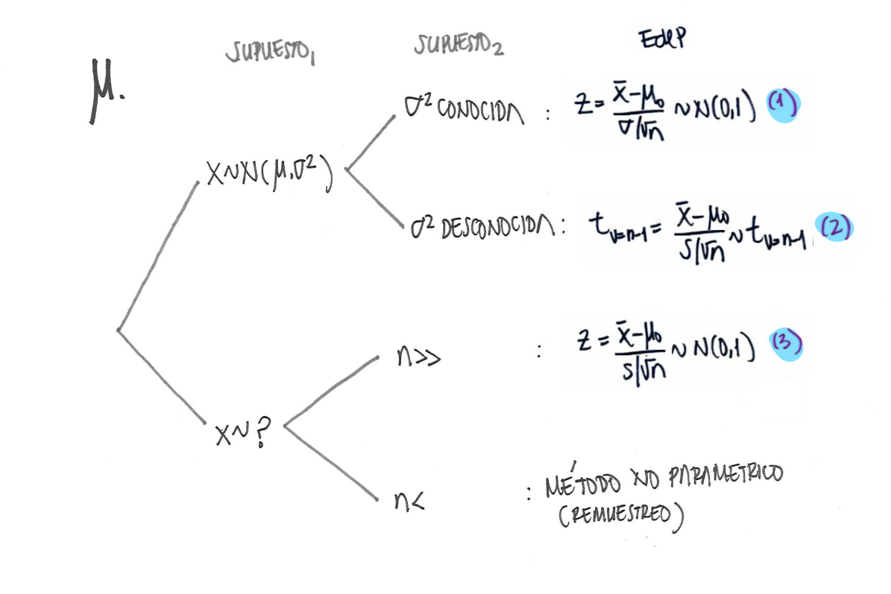
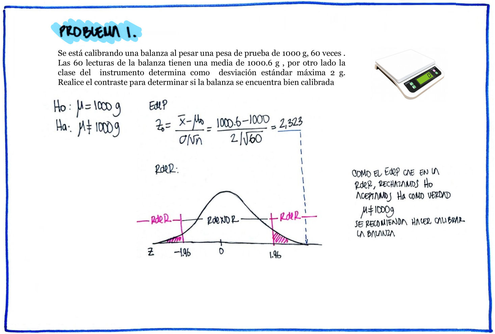
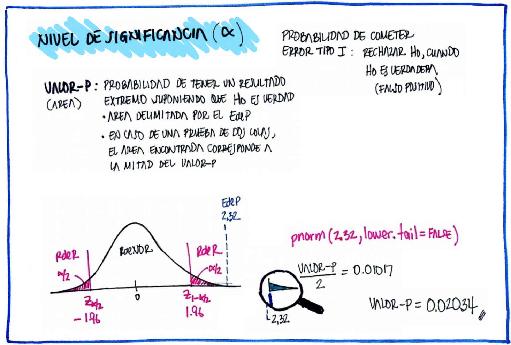
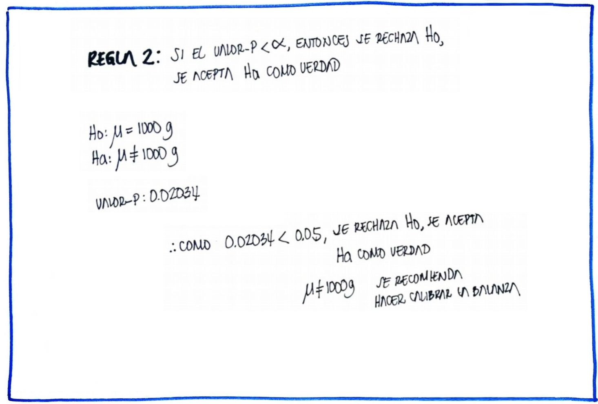
Ahora realicemos el procedimiento con datos simulados pas las hipótesis de dos colas sobre una media:
| \(Ho\) : \(\mu_{W} = 1000\) |
| \(Ha\) : \(\mu_{W} \neq 1000\) |
En ella el investigador desea validar si la media poblacional \(\mu\) es diferente a 1000. Solo en caso de rechazar \(Ho\), podrá concluir que \(Ho\) es falsa y como consecuencia de ello \(Ha\) es verdad.
Antes de seleccionar el procedimiento a realizar, es necesario
validar en los datos si ellos siguen una distribución normal o no, pues
de ello depende la prueba apropiada que se debe realizar.
# Problema 1
set.seed(123)
w= round(rnorm(100,1000,2), 1) # simulación de los datos
w [1] 998.9 999.5 1003.1 1000.1 1000.3 1003.4 1000.9 997.5 998.6 999.1
[11] 1002.4 1000.7 1000.8 1000.2 998.9 1003.6 1001.0 996.1 1001.4 999.1
[21] 997.9 999.6 997.9 998.5 998.7 996.6 1001.7 1000.3 997.7 1002.5
[31] 1000.9 999.4 1001.8 1001.8 1001.6 1001.4 1001.1 999.9 999.4 999.2
[41] 998.6 999.6 997.5 1004.3 1002.4 997.8 999.2 999.1 1001.6 999.8
[51] 1000.5 999.9 999.9 1002.7 999.5 1003.0 996.9 1001.2 1000.2 1000.4
[61] 1000.8 999.0 999.3 998.0 997.9 1000.6 1000.9 1000.1 1001.8 1004.1
[71] 999.0 995.4 1002.0 998.6 998.6 1002.1 999.4 997.6 1000.4 999.7
[81] 1000.0 1000.8 999.3 1001.3 999.6 1000.7 1002.2 1000.9 999.3 1002.3
[91] 1002.0 1001.1 1000.5 998.7 1002.7 998.8 1004.4 1003.1 999.5 997.9cat("media : ",mean(w), "\n")media : 1000.18 cat("sd : ", sd(w))sd : 1.824081Realicemos entonces el siguiente contraste de hipótesis:
| \(Ho\) : \(X \sim norm\) |
| \(Ha\) : \(X no \sim norm\) |
shapiro.test(w) # verificación de normalidad
Shapiro-Wilk normality test
data: w
W = 0.99381, p-value = 0.932Empleando la Regla 2
Si el valor-p < \(\alpha\), se rechaza \(Ho\), se acepta \(Ha\) como verdadera, de lo contrario no se rechaza \(Ho\), se asume que \(Ho\) es verdad.
Como el valor-p (0.323) < \(\alpha\) = 0.05, No se rechaza la hipótesis que los datos proceden de una distribución normal, asumimos que se distribuyen normal.
Caso con variable con distribución normal y varianza conocida
Supuestos:
| X normal |
| Varianza conocida (\(\sigma^{2}=4\)) |
BSDA::z.test(w, mu=1000, sigma.x = 2)
One-sample z-Test
data: w
z = 0.9, p-value = 0.3681
alternative hypothesis: true mean is not equal to 1000
95 percent confidence interval:
999.788 1000.572
sample estimates:
mean of x
1000.18 Alternativas para el planteamiento de las hipótesis
Podemos realizar pruebas de:
| Dos colas | Cola superior | Cola inferior |
|---|---|---|
| \(Ho\) : \(\mu = \mu_o\) | \(Ho\) : \(\mu \leq \mu_o\) | \(Ho\) : \(\mu \geq \mu_o\) |
| \(Ha\) : \(\mu \neq \mu_o\) | \(Ha\) : \(\mu > \mu_o\) | \(Ha\) : \(\mu < \mu_o\) |
Supuestos:
| X normal |
| Varianza desconocida |
Cuando se afirma que la varianza es conocida, se tiene como base para esta afirmación que se ha realizado censo y como producto de conocer todos los valores de la variables se puede obtener el valor del parámetro.
En caso que los datos que tenemos para la varianza procedan de una muestra, el valor obtenido \(s^{2}\), correponde a una estimación de la varianza y diremos que la varianza no se conoce y que la estimamos mediante los valores de una muestra.
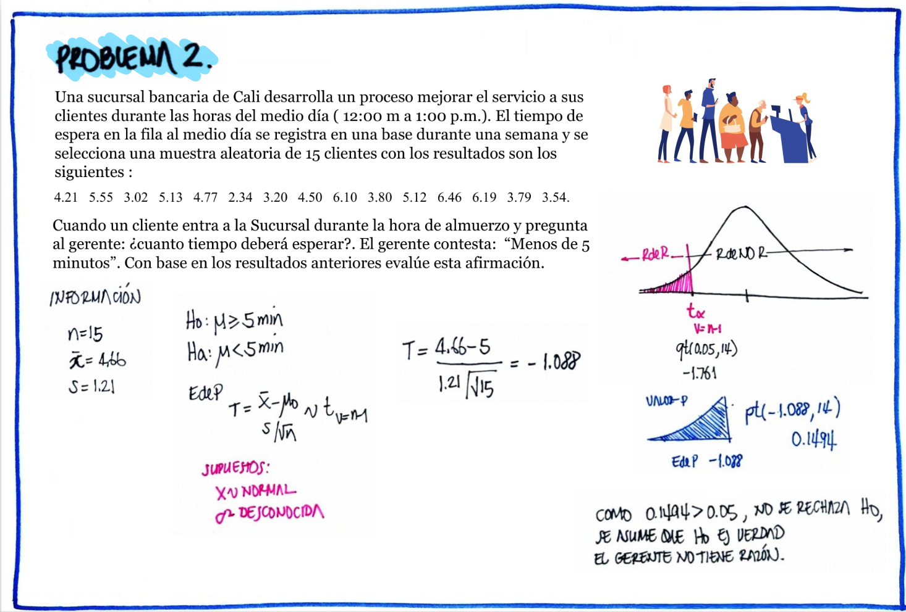
| \(Ho\) : \(\mu \geq 5\) |
| \(Ha\) : \(\mu < 5\) |
#-------------------------------------------------------------------------------
# Problema 2
t=c(4.21,5.55,3.02,5.13,4.77,2.34,5.42,4.50,6.10,3.80,5.12,6.46,6.19,3.79,3.54)
cat("media : ",mean(t), "\n")media : 4.662667 cat("sd : ", sd(t), "\n")sd : 1.210658 t.test(t,mu=5, alternative="less")
One Sample t-test
data: t
t = -1.0792, df = 14, p-value = 0.1494
alternative hypothesis: true mean is less than 5
95 percent confidence interval:
-Inf 5.213235
sample estimates:
mean of x
4.662667 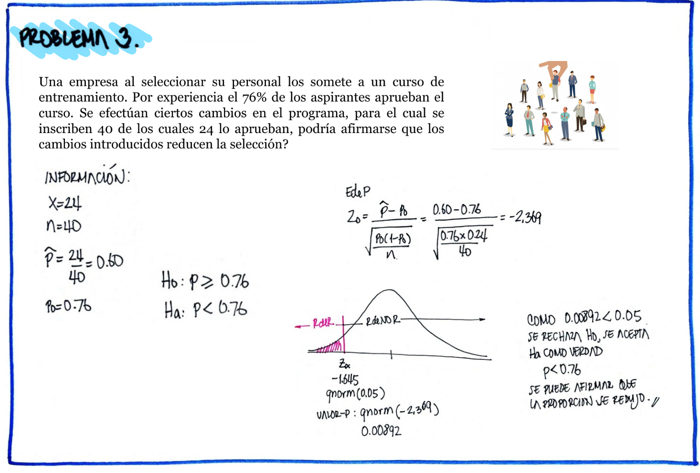
| \(Ho\) : \(p \geq 0.76\) |
| \(Ha\) : \(p < 0.76\) |
#-------------------------------------------------------------------------------
#Problema 3
z=(24/40-.76)/(sqrt(.76*(1-.76)/40))
prop.test(24,40,0.76,alternative="less")
1-sample proportions test with continuity correction
data: 24 out of 40, null probability 0.76
X-squared = 4.7711, df = 1, p-value = 0.01447
alternative hypothesis: true p is less than 0.76
95 percent confidence interval:
0.0000000 0.7282033
sample estimates:
p
0.6 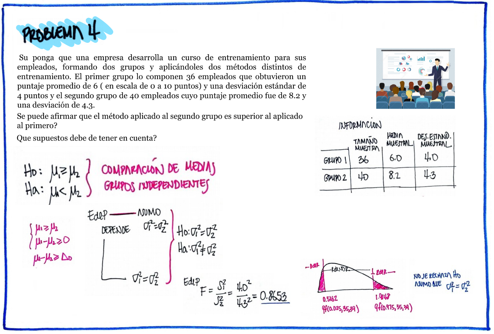
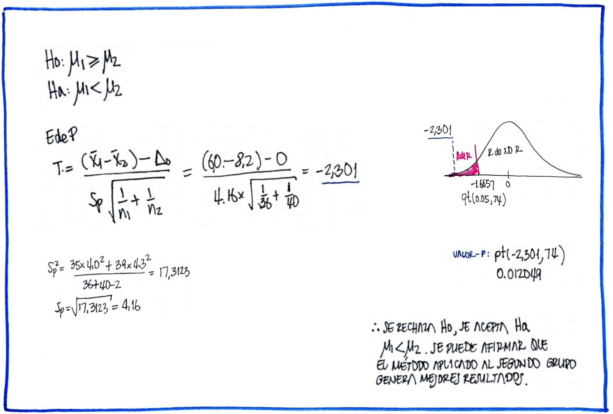
| \(Ho\) : \(\mu_1 \geq \mu_2\) |
| \(Ha\) : \(\mu_1 < \mu_2\) |
#---------------------------------------------------------------------------------
# Problema 4
n1=36 ; mx1=6 ; sx1=4
n2=40 ; mx2=8.2; sx2=4.3
F=sx1^2/sx2^2
RdeRF=qf(c(0.025,0.975),35,39)
cat("RdeR comparacion de varianzas :", RdeRF, "\n")RdeR comparacion de varianzas : 0.5161628 1.914807 #t.test(x1,x2,mu=0, alternative = "less")
s2p=((n1-1)*sx1^2+(n2-1)*sx2^2)/(n1+n2-2)
sp=sqrt(s2p)
T4=(mx1-mx2)/(sp*sqrt(1/n1+1/n2))
RdeRT4=qt(0.05,(n1+n2-2))
cat("RdeR comparación de medias : ", c(0,RdeRT4)) RdeR comparación de medias : 0 -1.665707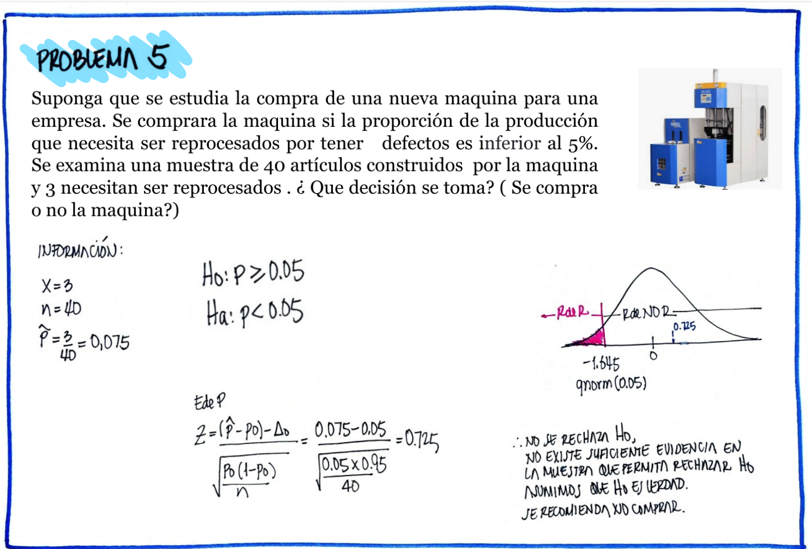
| \(Ho\) : \(p \geq 0.05\) |
| \(Ha\) : \(p < 0.05\) |
#-----------------------------------------------------------------------------------
# Problema 5
p5=3/40
z5=(p5-0.05)/sqrt(0.05*0.95/40)
cat("phat :", p5, "\n")phat : 0.075 prop.test(3,40, p=0.05, alternative = "less")
1-sample proportions test with continuity correction
data: 3 out of 40, null probability 0.05
X-squared = 0.13158, df = 1, p-value = 0.6416
alternative hypothesis: true p is less than 0.05
95 percent confidence interval:
0.0000000 0.1894048
sample estimates:
p
0.075 #----------------------------------------------------------------------------------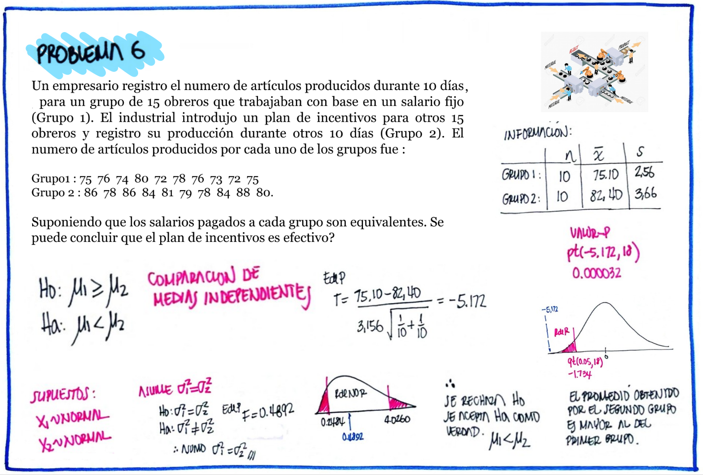
| \(Ho\) : \(\mu_{g1} \geq \mu_{g2}\) |
| \(Ha\) : \(\mu_{g1} < \mu_{g2}\) |
# Problema 6
g1=c(75,76,74,80,72,78,76,73,72,75)
g2=c(86,78,86,84,81,79,78,84,88,80)
cat("media g1 : " ,mean(g1), "\n")media g1 : 75.1 cat("sd g1 : ", sd(g1), "\n")sd g1 : 2.558211 cat("media g2 : ", mean(g2), "\n")media g2 : 82.4 cat("sd g1 : ", sd(g2), "\n")sd g1 : 3.657564 var.test(g1,g2)
F test to compare two variances
data: g1 and g2
F = 0.4892, num df = 9, denom df = 9, p-value = 0.3018
alternative hypothesis: true ratio of variances is not equal to 1
95 percent confidence interval:
0.121511 1.969527
sample estimates:
ratio of variances
0.4892027 t.test(g1,g2)
Welch Two Sample t-test
data: g1 and g2
t = -5.1719, df = 16.105, p-value = 9.078e-05
alternative hypothesis: true difference in means is not equal to 0
95 percent confidence interval:
-10.290576 -4.309424
sample estimates:
mean of x mean of y
75.1 82.4 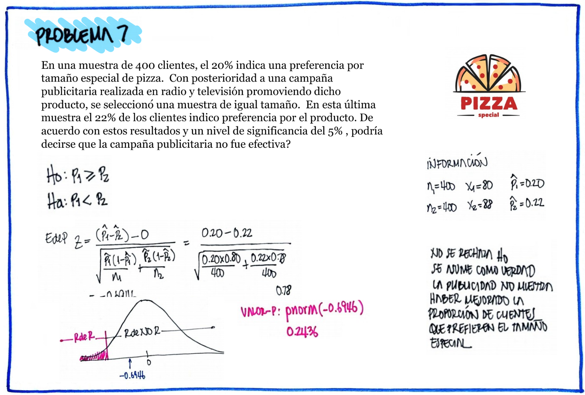
| \(Ho\) : \(p_1 = p_2\) |
| \(Ha\) : \(p \neq p_2\) |
#---------------------------------------------------------------------------------
# Problema 7
n1=400 ;x1=80
n2=400 ; x2=88
prop.test(c(80,88),c(400,400))
2-sample test for equality of proportions with continuity correction
data: c(80, 88) out of c(400, 400)
X-squared = 0.3692, df = 1, p-value = 0.5434
alternative hypothesis: two.sided
95 percent confidence interval:
-0.07893199 0.03893199
sample estimates:
prop 1 prop 2
0.20 0.22 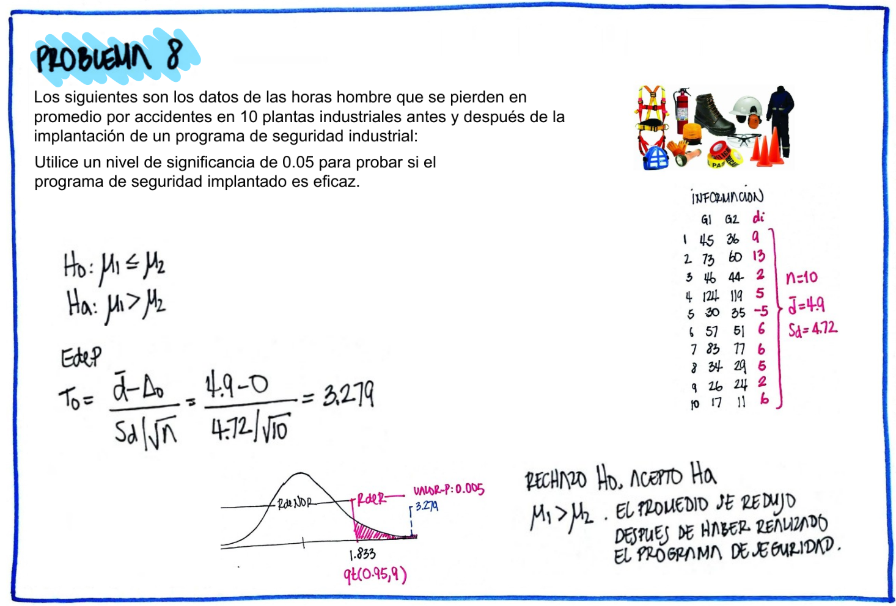
| \(Ho\) : \(\mu_1 \geq \mu_2\) |
| \(Ha\) : \(\mu_1 < \mu_2\) |
#-----------------------------------------------------------------------------------
# Problema 8
x1=c(45,73,46,124,30,57,83,34,26,17)
x2=c(36,60,44,119,35,51,77,29,24,11)
d=x1-x2
d [1] 9 13 2 5 -5 6 6 5 2 6cat("media : ",mean(d), "\n")media : 4.9 cat("sd : ", sd(d), "\n")sd : 4.72464 t.test(x1,x2,paired = TRUE)
Paired t-test
data: x1 and x2
t = 3.2796, df = 9, p-value = 0.009535
alternative hypothesis: true mean difference is not equal to 0
95 percent confidence interval:
1.520196 8.279804
sample estimates:
mean difference
4.9 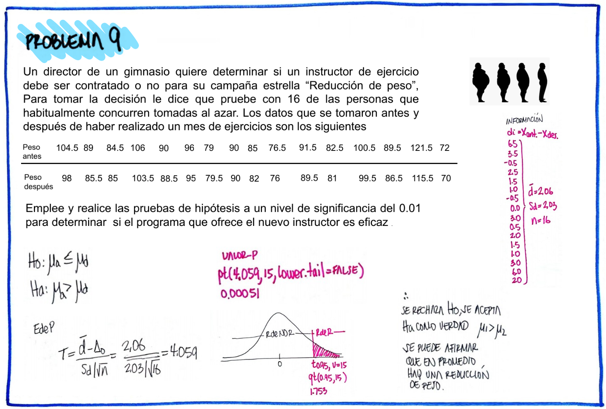
| \(Ho\) : \(\mu_{pa} \geq \mu_{pd}\) |
| \(Ha\) : \(\mu_{pa} < \mu_{pd}\) |
#------------------------------------------------------------------------------------
#Problema 9
pa=c(104.5,89,84.5,106,90,96,79,90,85,76.5,91.5,82.5,100.5,89.5,121.5,72)
pd=c(98,85.5,85,103.5,88.5,95,79.5,90,82,76,89.5,81,99.5,86.5,115.5,70)
d=pa-pd
d [1] 6.5 3.5 -0.5 2.5 1.5 1.0 -0.5 0.0 3.0 0.5 2.0 1.5 1.0 3.0 6.0
[16] 2.0cat("media : ",mean(d), "\n")media : 2.0625 cat("sd : ", sd(d),"\n")sd : 2.032035 t.test(pa,pd,paired = TRUE)
Paired t-test
data: pa and pd
t = 4.06, df = 15, p-value = 0.001026
alternative hypothesis: true mean difference is not equal to 0
95 percent confidence interval:
0.9797049 3.1452951
sample estimates:
mean difference
2.0625 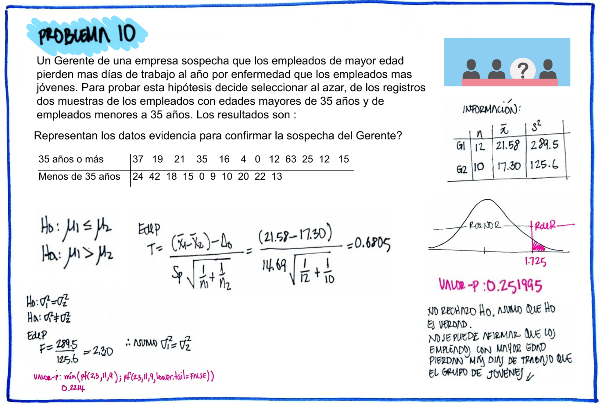
| Verificación de normalidad | Comparación de varianzas | Diferencia de medias |
|---|---|---|
| \(Ho\) : \(X_{g1} \sim norm\) | \(Ho\) : \(\sigma^{2}_{g1} = \sigma^{2}_{g2}\) | \(Ho\) : \(\mu_{g1} \geq \mu_{g2}\) |
| \(Ha\) : \(X_{g2} no \sim norm\) | \(Ha\) : \(\sigma^{2}_{g1} \neq \sigma^{2}_{g2}\) | \(Ha\) : \(\mu_{g1} < \mu_{g2}\) |
#-----------------------------------------------------------------------
# Problema 10
g1=c(37,19,21,35,16,4,0,12,63,25,12,15)
g2=c(24,42,18,15,0,9,10,20,22,13)
cat("n1 g1: ", length(g1), "\n")n1 g1: 12 cat("media g1: ",mean(g1), "\n")media g1: 21.58333 cat("sd g1: ", sd(g1), "\n")sd g1: 17.01581 cat("n1 g2: ", length(g2), "\n")n1 g2: 10 cat("media g2: ",mean(g2), "\n")media g2: 17.3 cat("sd g2: ", sd(g2), "\n")sd g2: 11.20565 var.test(g1,g2)
F test to compare two variances
data: g1 and g2
F = 2.3058, num df = 11, denom df = 9, p-value = 0.22
alternative hypothesis: true ratio of variances is not equal to 1
95 percent confidence interval:
0.5894187 8.2731556
sample estimates:
ratio of variances
2.30585 t.test(g1,g2)
Welch Two Sample t-test
data: g1 and g2
t = 0.70719, df = 19.104, p-value = 0.488
alternative hypothesis: true difference in means is not equal to 0
95 percent confidence interval:
-8.389007 16.955673
sample estimates:
mean of x mean of y
21.58333 17.30000 Pruebas no paramétricas
Prueba de rachas
library(randtests)
x=c("N","D","N","N","N","N","N","D","D","D","N","N","N","N","D","N","N","D","N","N","N","D","N","N","N","N","N","N","N","D","D","D","D")
rachas<-as.numeric(x=="N")
runs.test(rachas,alternative = "left.sided",threshold = 0.5,pvalue = "exact",plot=F)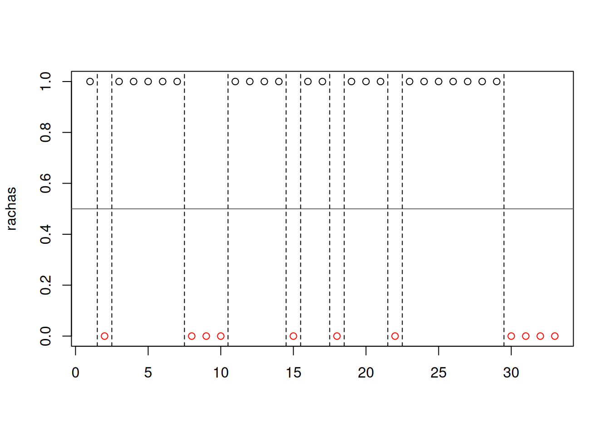
Runs Test
data: rachas
statistic = -1.465, runs = 12, n1 = 22, n2 = 11, n = 33, p-value =
0.1032
alternative hypothesis: trendPruebas de normalidad
Existen varias pruebas de hipótesis para verificar si una variable tiene un comportamiento aproximadamente normal.En todos los casos las hipótesis planteadas son:
| \(Ho\): \(X\) tiene distribución Normal |
| \(Ha\): \(X\) no tiene distribución Normal |
# se genera una variable aleatoria normal
# x=rnorm(100,1000,50) #round(x,1)
x <- c(946.5, 997.7, 1014.0, 1050.1, 942.3, 974.0, 997.4, 1135.8, 863.9, 1068.8, 956.9, 998.1, 997.6, 1023.4, 1008.7, 965.5, 974.8, 1063.6, 1001.2, 1090.9, 979.0, 931.5, 1018.7, 988.0, 979.9, 1043.0, 976.4, 1035.5, 1119.3, 924.3, 998.8, 1068.6, 975.5, 1037.1, 896.6, 954.7, 1029.4, 979.4, 984.1, 1004.2, 1075.1, 989.8, 1095.6, 1016.8, 909.6, 979.6, 1055.2, 1008.4, 1064.6, 994.1, 931.9, 910.8, 1045.9, 949.1, 1078.2, 1051.5, 946.9, 981.8, 988.1, 1007.5, 1082.1, 974.1, 1015.4, 961.6, 920.8, 938.1, 1008.1, 974.6, 1052.0, 986.1, 1042.3, 1014.5, 999.5, 962.0, 1024.0, 1012.4, 1014.8, 1038.4, 1084.1, 976.1, 916.2, 1023.4, 950.3, 1005.3, 945.2, 968.0, 1039.8, 1001.8, 964.4, 940.0, 982.5, 1012.9, 978.1, 1014.9, 999.0, 1031.3, 1025.6, 1034.4, 973.5, 1091.0)
plot(density(x), las=1)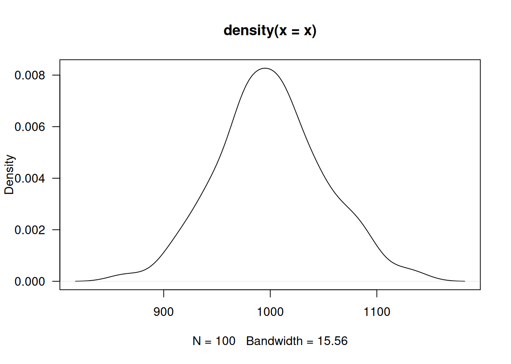
Shapiro Wilk
x <- c(946.5, 997.7, 1014.0, 1050.1, 942.3, 974.0, 997.4, 1135.8, 863.9, 1068.8, 956.9, 998.1, 997.6, 1023.4, 1008.7, 965.5, 974.8, 1063.6, 1001.2, 1090.9, 979.0, 931.5, 1018.7, 988.0, 979.9, 1043.0, 976.4, 1035.5, 1119.3, 924.3, 998.8, 1068.6, 975.5, 1037.1, 896.6, 954.7, 1029.4, 979.4, 984.1, 1004.2, 1075.1, 989.8, 1095.6, 1016.8, 909.6, 979.6, 1055.2, 1008.4, 1064.6, 994.1, 931.9, 910.8, 1045.9, 949.1, 1078.2, 1051.5, 946.9, 981.8, 988.1, 1007.5, 1082.1, 974.1, 1015.4, 961.6, 920.8, 938.1, 1008.1, 974.6, 1052.0, 986.1, 1042.3, 1014.5, 999.5, 962.0, 1024.0, 1012.4, 1014.8, 1038.4, 1084.1, 976.1, 916.2, 1023.4, 950.3, 1005.3, 945.2, 968.0, 1039.8, 1001.8, 964.4, 940.0, 982.5, 1012.9, 978.1, 1014.9, 999.0, 1031.3, 1025.6, 1034.4, 973.5, 1091.0)
shapiro.test(x)
Shapiro-Wilk normality test
data: x
W = 0.9956, p-value = 0.9877Esta prueba no requiere la instalación de paquetes adicionales, está disponible en la configuración básica de R
Paquete normtest
Las siguientes pruebas requieren instalar y cargar el paquete:
normtest
install.packages("normtets")
library(normtest)Jarque-Bera ajustado
x <- c(946.5, 997.7, 1014.0, 1050.1, 942.3, 974.0, 997.4, 1135.8, 863.9, 1068.8, 956.9, 998.1, 997.6, 1023.4, 1008.7, 965.5, 974.8, 1063.6, 1001.2, 1090.9, 979.0, 931.5, 1018.7, 988.0, 979.9, 1043.0, 976.4, 1035.5, 1119.3, 924.3, 998.8, 1068.6, 975.5, 1037.1, 896.6, 954.7, 1029.4, 979.4, 984.1, 1004.2, 1075.1, 989.8, 1095.6, 1016.8, 909.6, 979.6, 1055.2, 1008.4, 1064.6, 994.1, 931.9, 910.8, 1045.9, 949.1, 1078.2, 1051.5, 946.9, 981.8, 988.1, 1007.5, 1082.1, 974.1, 1015.4, 961.6, 920.8, 938.1, 1008.1, 974.6, 1052.0, 986.1, 1042.3, 1014.5, 999.5, 962.0, 1024.0, 1012.4, 1014.8, 1038.4, 1084.1, 976.1, 916.2, 1023.4, 950.3, 1005.3, 945.2, 968.0, 1039.8, 1001.8, 964.4, 940.0, 982.5, 1012.9, 978.1, 1014.9, 999.0, 1031.3, 1025.6, 1034.4, 973.5, 1091.0)
ajb.norm.test(x)
Adjusted Jarque-Bera test for normality
data: x
AJB = 0.32478, p-value = 0.835Frosini
x <- c(946.5, 997.7, 1014.0, 1050.1, 942.3, 974.0, 997.4, 1135.8, 863.9, 1068.8, 956.9, 998.1, 997.6, 1023.4, 1008.7, 965.5, 974.8, 1063.6, 1001.2, 1090.9, 979.0, 931.5, 1018.7, 988.0, 979.9, 1043.0, 976.4, 1035.5, 1119.3, 924.3, 998.8, 1068.6, 975.5, 1037.1, 896.6, 954.7, 1029.4, 979.4, 984.1, 1004.2, 1075.1, 989.8, 1095.6, 1016.8, 909.6, 979.6, 1055.2, 1008.4, 1064.6, 994.1, 931.9, 910.8, 1045.9, 949.1, 1078.2, 1051.5, 946.9, 981.8, 988.1, 1007.5, 1082.1, 974.1, 1015.4, 961.6, 920.8, 938.1, 1008.1, 974.6, 1052.0, 986.1, 1042.3, 1014.5, 999.5, 962.0, 1024.0, 1012.4, 1014.8, 1038.4, 1084.1, 976.1, 916.2, 1023.4, 950.3, 1005.3, 945.2, 968.0, 1039.8, 1001.8, 964.4, 940.0, 982.5, 1012.9, 978.1, 1014.9, 999.0, 1031.3, 1025.6, 1034.4, 973.5, 1091.0)
frosini.norm.test(x)
Frosini test for normality
data: x
B = 0.14702, p-value = 0.7695Geary
x <- c(946.5, 997.7, 1014.0, 1050.1, 942.3, 974.0, 997.4, 1135.8, 863.9, 1068.8, 956.9, 998.1, 997.6, 1023.4, 1008.7, 965.5, 974.8, 1063.6, 1001.2, 1090.9, 979.0, 931.5, 1018.7, 988.0, 979.9, 1043.0, 976.4, 1035.5, 1119.3, 924.3, 998.8, 1068.6, 975.5, 1037.1, 896.6, 954.7, 1029.4, 979.4, 984.1, 1004.2, 1075.1, 989.8, 1095.6, 1016.8, 909.6, 979.6, 1055.2, 1008.4, 1064.6, 994.1, 931.9, 910.8, 1045.9, 949.1, 1078.2, 1051.5, 946.9, 981.8, 988.1, 1007.5, 1082.1, 974.1, 1015.4, 961.6, 920.8, 938.1, 1008.1, 974.6, 1052.0, 986.1, 1042.3, 1014.5, 999.5, 962.0, 1024.0, 1012.4, 1014.8, 1038.4, 1084.1, 976.1, 916.2, 1023.4, 950.3, 1005.3, 945.2, 968.0, 1039.8, 1001.8, 964.4, 940.0, 982.5, 1012.9, 978.1, 1014.9, 999.0, 1031.3, 1025.6, 1034.4, 973.5, 1091.0)
geary.norm.test(x)
Geary test for normality
data: x
d = 0.78316, p-value = 0.798Hagazy-Green 1
x <- c(946.5, 997.7, 1014.0, 1050.1, 942.3, 974.0, 997.4, 1135.8, 863.9, 1068.8, 956.9, 998.1, 997.6, 1023.4, 1008.7, 965.5, 974.8, 1063.6, 1001.2, 1090.9, 979.0, 931.5, 1018.7, 988.0, 979.9, 1043.0, 976.4, 1035.5, 1119.3, 924.3, 998.8, 1068.6, 975.5, 1037.1, 896.6, 954.7, 1029.4, 979.4, 984.1, 1004.2, 1075.1, 989.8, 1095.6, 1016.8, 909.6, 979.6, 1055.2, 1008.4, 1064.6, 994.1, 931.9, 910.8, 1045.9, 949.1, 1078.2, 1051.5, 946.9, 981.8, 988.1, 1007.5, 1082.1, 974.1, 1015.4, 961.6, 920.8, 938.1, 1008.1, 974.6, 1052.0, 986.1, 1042.3, 1014.5, 999.5, 962.0, 1024.0, 1012.4, 1014.8, 1038.4, 1084.1, 976.1, 916.2, 1023.4, 950.3, 1005.3, 945.2, 968.0, 1039.8, 1001.8, 964.4, 940.0, 982.5, 1012.9, 978.1, 1014.9, 999.0, 1031.3, 1025.6, 1034.4, 973.5, 1091.0)
hegazy1.norm.test(x)
Hegazy-Green test for normality
data: x
T = 0.061694, p-value = 0.8605Hagazy-Green 2
x <- c(946.5, 997.7, 1014.0, 1050.1, 942.3, 974.0, 997.4, 1135.8, 863.9, 1068.8, 956.9, 998.1, 997.6, 1023.4, 1008.7, 965.5, 974.8, 1063.6, 1001.2, 1090.9, 979.0, 931.5, 1018.7, 988.0, 979.9, 1043.0, 976.4, 1035.5, 1119.3, 924.3, 998.8, 1068.6, 975.5, 1037.1, 896.6, 954.7, 1029.4, 979.4, 984.1, 1004.2, 1075.1, 989.8, 1095.6, 1016.8, 909.6, 979.6, 1055.2, 1008.4, 1064.6, 994.1, 931.9, 910.8, 1045.9, 949.1, 1078.2, 1051.5, 946.9, 981.8, 988.1, 1007.5, 1082.1, 974.1, 1015.4, 961.6, 920.8, 938.1, 1008.1, 974.6, 1052.0, 986.1, 1042.3, 1014.5, 999.5, 962.0, 1024.0, 1012.4, 1014.8, 1038.4, 1084.1, 976.1, 916.2, 1023.4, 950.3, 1005.3, 945.2, 968.0, 1039.8, 1001.8, 964.4, 940.0, 982.5, 1012.9, 978.1, 1014.9, 999.0, 1031.3, 1025.6, 1034.4, 973.5, 1091.0)
hegazy2.norm.test(x)
Hegazy-Green test for normality
data: x
T = 0.008273, p-value = 0.795Jarque-Bera
x <- c(946.5, 997.7, 1014.0, 1050.1, 942.3, 974.0, 997.4, 1135.8, 863.9, 1068.8, 956.9, 998.1, 997.6, 1023.4, 1008.7, 965.5, 974.8, 1063.6, 1001.2, 1090.9, 979.0, 931.5, 1018.7, 988.0, 979.9, 1043.0, 976.4, 1035.5, 1119.3, 924.3, 998.8, 1068.6, 975.5, 1037.1, 896.6, 954.7, 1029.4, 979.4, 984.1, 1004.2, 1075.1, 989.8, 1095.6, 1016.8, 909.6, 979.6, 1055.2, 1008.4, 1064.6, 994.1, 931.9, 910.8, 1045.9, 949.1, 1078.2, 1051.5, 946.9, 981.8, 988.1, 1007.5, 1082.1, 974.1, 1015.4, 961.6, 920.8, 938.1, 1008.1, 974.6, 1052.0, 986.1, 1042.3, 1014.5, 999.5, 962.0, 1024.0, 1012.4, 1014.8, 1038.4, 1084.1, 976.1, 916.2, 1023.4, 950.3, 1005.3, 945.2, 968.0, 1039.8, 1001.8, 964.4, 940.0, 982.5, 1012.9, 978.1, 1014.9, 999.0, 1031.3, 1025.6, 1034.4, 973.5, 1091.0)
jb.norm.test(x)
Jarque-Bera test for normality
data: x
JB = 0.24559, p-value = 0.871de kurtosis
x <- c(946.5, 997.7, 1014.0, 1050.1, 942.3, 974.0, 997.4, 1135.8, 863.9, 1068.8, 956.9, 998.1, 997.6, 1023.4, 1008.7, 965.5, 974.8, 1063.6, 1001.2, 1090.9, 979.0, 931.5, 1018.7, 988.0, 979.9, 1043.0, 976.4, 1035.5, 1119.3, 924.3, 998.8, 1068.6, 975.5, 1037.1, 896.6, 954.7, 1029.4, 979.4, 984.1, 1004.2, 1075.1, 989.8, 1095.6, 1016.8, 909.6, 979.6, 1055.2, 1008.4, 1064.6, 994.1, 931.9, 910.8, 1045.9, 949.1, 1078.2, 1051.5, 946.9, 981.8, 988.1, 1007.5, 1082.1, 974.1, 1015.4, 961.6, 920.8, 938.1, 1008.1, 974.6, 1052.0, 986.1, 1042.3, 1014.5, 999.5, 962.0, 1024.0, 1012.4, 1014.8, 1038.4, 1084.1, 976.1, 916.2, 1023.4, 950.3, 1005.3, 945.2, 968.0, 1039.8, 1001.8, 964.4, 940.0, 982.5, 1012.9, 978.1, 1014.9, 999.0, 1031.3, 1025.6, 1034.4, 973.5, 1091.0)
kurtosis.norm.test(x)
Kurtosis test for normality
data: x
T = 3.0775, p-value = 0.875de sesgo
x <- c(946.5, 997.7, 1014.0, 1050.1, 942.3, 974.0, 997.4, 1135.8, 863.9, 1068.8, 956.9, 998.1, 997.6, 1023.4, 1008.7, 965.5, 974.8, 1063.6, 1001.2, 1090.9, 979.0, 931.5, 1018.7, 988.0, 979.9, 1043.0, 976.4, 1035.5, 1119.3, 924.3, 998.8, 1068.6, 975.5, 1037.1, 896.6, 954.7, 1029.4, 979.4, 984.1, 1004.2, 1075.1, 989.8, 1095.6, 1016.8, 909.6, 979.6, 1055.2, 1008.4, 1064.6, 994.1, 931.9, 910.8, 1045.9, 949.1, 1078.2, 1051.5, 946.9, 981.8, 988.1, 1007.5, 1082.1, 974.1, 1015.4, 961.6, 920.8, 938.1, 1008.1, 974.6, 1052.0, 986.1, 1042.3, 1014.5, 999.5, 962.0, 1024.0, 1012.4, 1014.8, 1038.4, 1084.1, 976.1, 916.2, 1023.4, 950.3, 1005.3, 945.2, 968.0, 1039.8, 1001.8, 964.4, 940.0, 982.5, 1012.9, 978.1, 1014.9, 999.0, 1031.3, 1025.6, 1034.4, 973.5, 1091.0)
skewness.norm.test(x)
Skewness test for normality
data: x
T = 0.11503, p-value = 0.622Spiegelhalter
x <- c(946.5, 997.7, 1014.0, 1050.1, 942.3, 974.0, 997.4, 1135.8, 863.9, 1068.8, 956.9, 998.1, 997.6, 1023.4, 1008.7, 965.5, 974.8, 1063.6, 1001.2, 1090.9, 979.0, 931.5, 1018.7, 988.0, 979.9, 1043.0, 976.4, 1035.5, 1119.3, 924.3, 998.8, 1068.6, 975.5, 1037.1, 896.6, 954.7, 1029.4, 979.4, 984.1, 1004.2, 1075.1, 989.8, 1095.6, 1016.8, 909.6, 979.6, 1055.2, 1008.4, 1064.6, 994.1, 931.9, 910.8, 1045.9, 949.1, 1078.2, 1051.5, 946.9, 981.8, 988.1, 1007.5, 1082.1, 974.1, 1015.4, 961.6, 920.8, 938.1, 1008.1, 974.6, 1052.0, 986.1, 1042.3, 1014.5, 999.5, 962.0, 1024.0, 1012.4, 1014.8, 1038.4, 1084.1, 976.1, 916.2, 1023.4, 950.3, 1005.3, 945.2, 968.0, 1039.8, 1001.8, 964.4, 940.0, 982.5, 1012.9, 978.1, 1014.9, 999.0, 1031.3, 1025.6, 1034.4, 973.5, 1091.0)
spiegelhalter.norm.test(x)
Spiegelhalter test for normality
data: x
T = 1.2769, p-value = 0.212Weisberg-Bingham
x <- c(946.5, 997.7, 1014.0, 1050.1, 942.3, 974.0, 997.4, 1135.8, 863.9, 1068.8, 956.9, 998.1, 997.6, 1023.4, 1008.7, 965.5, 974.8, 1063.6, 1001.2, 1090.9, 979.0, 931.5, 1018.7, 988.0, 979.9, 1043.0, 976.4, 1035.5, 1119.3, 924.3, 998.8, 1068.6, 975.5, 1037.1, 896.6, 954.7, 1029.4, 979.4, 984.1, 1004.2, 1075.1, 989.8, 1095.6, 1016.8, 909.6, 979.6, 1055.2, 1008.4, 1064.6, 994.1, 931.9, 910.8, 1045.9, 949.1, 1078.2, 1051.5, 946.9, 981.8, 988.1, 1007.5, 1082.1, 974.1, 1015.4, 961.6, 920.8, 938.1, 1008.1, 974.6, 1052.0, 986.1, 1042.3, 1014.5, 999.5, 962.0, 1024.0, 1012.4, 1014.8, 1038.4, 1084.1, 976.1, 916.2, 1023.4, 950.3, 1005.3, 945.2, 968.0, 1039.8, 1001.8, 964.4, 940.0, 982.5, 1012.9, 978.1, 1014.9, 999.0, 1031.3, 1025.6, 1034.4, 973.5, 1091.0)
wb.norm.test(x)
Weisberg-Bingham test for normality
data: x
WB = 0.99466, p-value = 0.9375Paquete nortest
Las siguientes pruebas requieren instalar y cargar el paquete:
nortest
# install.packages("nortets")
library(nortest)Anderson-Darling
x <- c(946.5, 997.7, 1014.0, 1050.1, 942.3, 974.0, 997.4, 1135.8, 863.9, 1068.8, 956.9, 998.1, 997.6, 1023.4, 1008.7, 965.5, 974.8, 1063.6, 1001.2, 1090.9, 979.0, 931.5, 1018.7, 988.0, 979.9, 1043.0, 976.4, 1035.5, 1119.3, 924.3, 998.8, 1068.6, 975.5, 1037.1, 896.6, 954.7, 1029.4, 979.4, 984.1, 1004.2, 1075.1, 989.8, 1095.6, 1016.8, 909.6, 979.6, 1055.2, 1008.4, 1064.6, 994.1, 931.9, 910.8, 1045.9, 949.1, 1078.2, 1051.5, 946.9, 981.8, 988.1, 1007.5, 1082.1, 974.1, 1015.4, 961.6, 920.8, 938.1, 1008.1, 974.6, 1052.0, 986.1, 1042.3, 1014.5, 999.5, 962.0, 1024.0, 1012.4, 1014.8, 1038.4, 1084.1, 976.1, 916.2, 1023.4, 950.3, 1005.3, 945.2, 968.0, 1039.8, 1001.8, 964.4, 940.0, 982.5, 1012.9, 978.1, 1014.9, 999.0, 1031.3, 1025.6, 1034.4, 973.5, 1091.0)
ad.test(x)
Anderson-Darling normality test
data: x
A = 0.20586, p-value = 0.8673Cramer-von Mises
x <- c(946.5, 997.7, 1014.0, 1050.1, 942.3, 974.0, 997.4, 1135.8, 863.9, 1068.8, 956.9, 998.1, 997.6, 1023.4, 1008.7, 965.5, 974.8, 1063.6, 1001.2, 1090.9, 979.0, 931.5, 1018.7, 988.0, 979.9, 1043.0, 976.4, 1035.5, 1119.3, 924.3, 998.8, 1068.6, 975.5, 1037.1, 896.6, 954.7, 1029.4, 979.4, 984.1, 1004.2, 1075.1, 989.8, 1095.6, 1016.8, 909.6, 979.6, 1055.2, 1008.4, 1064.6, 994.1, 931.9, 910.8, 1045.9, 949.1, 1078.2, 1051.5, 946.9, 981.8, 988.1, 1007.5, 1082.1, 974.1, 1015.4, 961.6, 920.8, 938.1, 1008.1, 974.6, 1052.0, 986.1, 1042.3, 1014.5, 999.5, 962.0, 1024.0, 1012.4, 1014.8, 1038.4, 1084.1, 976.1, 916.2, 1023.4, 950.3, 1005.3, 945.2, 968.0, 1039.8, 1001.8, 964.4, 940.0, 982.5, 1012.9, 978.1, 1014.9, 999.0, 1031.3, 1025.6, 1034.4, 973.5, 1091.0)
cvm.test(x)
Cramer-von Mises normality test
data: x
W = 0.037008, p-value = 0.7332Lilliefors (Kolmogorov-Smirnov)
x <- c(946.5, 997.7, 1014.0, 1050.1, 942.3, 974.0, 997.4, 1135.8, 863.9, 1068.8, 956.9, 998.1, 997.6, 1023.4, 1008.7, 965.5, 974.8, 1063.6, 1001.2, 1090.9, 979.0, 931.5, 1018.7, 988.0, 979.9, 1043.0, 976.4, 1035.5, 1119.3, 924.3, 998.8, 1068.6, 975.5, 1037.1, 896.6, 954.7, 1029.4, 979.4, 984.1, 1004.2, 1075.1, 989.8, 1095.6, 1016.8, 909.6, 979.6, 1055.2, 1008.4, 1064.6, 994.1, 931.9, 910.8, 1045.9, 949.1, 1078.2, 1051.5, 946.9, 981.8, 988.1, 1007.5, 1082.1, 974.1, 1015.4, 961.6, 920.8, 938.1, 1008.1, 974.6, 1052.0, 986.1, 1042.3, 1014.5, 999.5, 962.0, 1024.0, 1012.4, 1014.8, 1038.4, 1084.1, 976.1, 916.2, 1023.4, 950.3, 1005.3, 945.2, 968.0, 1039.8, 1001.8, 964.4, 940.0, 982.5, 1012.9, 978.1, 1014.9, 999.0, 1031.3, 1025.6, 1034.4, 973.5, 1091.0)
lillie.test(x)
Lilliefors (Kolmogorov-Smirnov) normality test
data: x
D = 0.054822, p-value = 0.6495chi-cuadrado de Pearson
x <- c(946.5, 997.7, 1014.0, 1050.1, 942.3, 974.0, 997.4, 1135.8, 863.9, 1068.8, 956.9, 998.1, 997.6, 1023.4, 1008.7, 965.5, 974.8, 1063.6, 1001.2, 1090.9, 979.0, 931.5, 1018.7, 988.0, 979.9, 1043.0, 976.4, 1035.5, 1119.3, 924.3, 998.8, 1068.6, 975.5, 1037.1, 896.6, 954.7, 1029.4, 979.4, 984.1, 1004.2, 1075.1, 989.8, 1095.6, 1016.8, 909.6, 979.6, 1055.2, 1008.4, 1064.6, 994.1, 931.9, 910.8, 1045.9, 949.1, 1078.2, 1051.5, 946.9, 981.8, 988.1, 1007.5, 1082.1, 974.1, 1015.4, 961.6, 920.8, 938.1, 1008.1, 974.6, 1052.0, 986.1, 1042.3, 1014.5, 999.5, 962.0, 1024.0, 1012.4, 1014.8, 1038.4, 1084.1, 976.1, 916.2, 1023.4, 950.3, 1005.3, 945.2, 968.0, 1039.8, 1001.8, 964.4, 940.0, 982.5, 1012.9, 978.1, 1014.9, 999.0, 1031.3, 1025.6, 1034.4, 973.5, 1091.0)
pearson.test(x)
Pearson chi-square normality test
data: x
P = 7.38, p-value = 0.6891Shapiro-Francia
x <- c(946.5, 997.7, 1014.0, 1050.1, 942.3, 974.0, 997.4, 1135.8, 863.9, 1068.8, 956.9, 998.1, 997.6, 1023.4, 1008.7, 965.5, 974.8, 1063.6, 1001.2, 1090.9, 979.0, 931.5, 1018.7, 988.0, 979.9, 1043.0, 976.4, 1035.5, 1119.3, 924.3, 998.8, 1068.6, 975.5, 1037.1, 896.6, 954.7, 1029.4, 979.4, 984.1, 1004.2, 1075.1, 989.8, 1095.6, 1016.8, 909.6, 979.6, 1055.2, 1008.4, 1064.6, 994.1, 931.9, 910.8, 1045.9, 949.1, 1078.2, 1051.5, 946.9, 981.8, 988.1, 1007.5, 1082.1, 974.1, 1015.4, 961.6, 920.8, 938.1, 1008.1, 974.6, 1052.0, 986.1, 1042.3, 1014.5, 999.5, 962.0, 1024.0, 1012.4, 1014.8, 1038.4, 1084.1, 976.1, 916.2, 1023.4, 950.3, 1005.3, 945.2, 968.0, 1039.8, 1001.8, 964.4, 940.0, 982.5, 1012.9, 978.1, 1014.9, 999.0, 1031.3, 1025.6, 1034.4, 973.5, 1091.0)
sf.test(x)
Shapiro-Francia normality test
data: x
W = 0.99466, p-value = 0.923En todos los casos se presenta un valor-p grande por lo cual no se rechaza \(Ho\), asumimos que \(Ho\) es verdad. Asumimos que la distribución de la variable \(X\) es normal
Referencias :